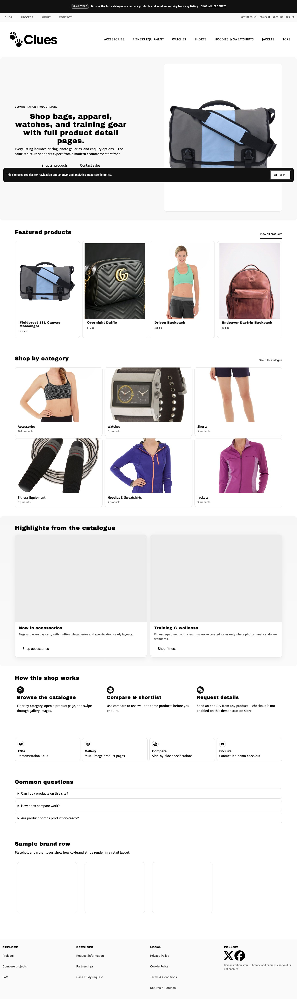

Programme demo
MSR Products
Fieldcrest Supply Co. — inquiry-first WooCommerce demonstration store on a Vite-built theme. The live shop is the demo; this page is the case-study summary.
Try it: open the live shop for catalogue, product detail, and enquiry flows — or the Product Companion SPA on this portfolio.

Overview
MSR Products sits in the portfolio Programme demo lane alongside Events, Awards, Seminars, and Atlas Briefing. Commerce is inquiry-led (no checkout theatre): browse SKUs, open product detail, and use enquiry CTAs aligned with the demo brief.
Implementation
- WooCommerce with Vite-built theme assets and ACF options for promo, hero, and catalogue copy.
- SKU-accurate imagery — thumbnails matched to catalogue SKUs (bag → bag, bottle → bottle).
- Home showcase bands, shop archive, and product templates under programme acceptance.
- Product Companion — React browse demo (search, categories, inquiry CTAs) fed from exported catalogue JSON.
Homepage capture
One full-page desktop capture for at-a-glance proof. For interaction, use Live shop above — that is the authoritative demo.

npm run msrproducts:design-screens:capture after theme changes.Verification
Labelled programme demo — not a live client brand. Design proof is the shipped theme and local/live shop URLs, not a separate design tool export.